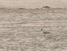
Berck, les Rencontres Internationales de Cerf-volant. Cette année, Championnat du monde de deux-lignes en team. Mais le monofil garde son importance, comme les JdVs. Et aussi les mouettes sur la plage qui reviennent dès qu'on débarrasse leur terrain de nos bazars infernaux...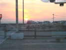
J'arrive vendredi soir, comme d'hab, ciel bleu, mais pas mal de nuages à l'horizon, soleil rouge = pas très bon signe météo !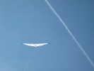
Eh bien finalement, il fait plutôt beau en ce samedi matin (d'accord, ça ne va pas durer...) ! Mon Albatros à la toile toute neuve éclate dans le ciel bleu, je ne regrette pas le boulot, après un moment délicat de mise au point (je n'ai pas eu le temps de voler avant...).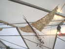
Sur la promenade, un tas de marchands et d'expos. Mme Comalonga expose de très beaux oiseaux de feuilles et de bouquets séchés, elle fait même le papier composite elle-même !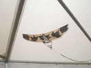
La matière est splendide, j'y suis très sensible, et les formes ne sont pas mal non plus.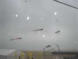
Las, il commence à neiger ! Peter Lynn ne mollit pas et honore son contrat, il sera en l'air tous les jours volables de 9 h à 18 h, pas comme d'autres !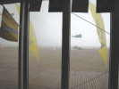
Le déjeuner sauve la mise, on se réfugie dans le barnum, rigide, cette année, avec de grandes baies continues donnant sur la plage...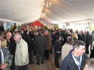
Et un petit pot municipal d'inauguration, avec musique, discours et apéritifs qui permettent de se retrouver entre amis ou d'en rencontrer de nouveaux.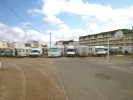
Ca se dégage un peu, pendant que le parking réservé aux cervolistes se meuble petit-à-petit de camping-cars de toutes les tailles...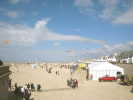
La disposition générale est la même que d'habitude, le terrain de présentation au milieu, à gauche les gros monofils, à droite les autres, puis les JdVs, et le barnum (pardon, la tente VIPs) dans le renfoncement...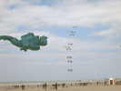
Les révos commencent à se rassembler, surveillés par une monstrueuse grenouille aux muscles impressionnants...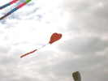
Dans les gros, ce cerf-volant en forme de coeur séduit beaucoup !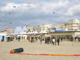
Le public arrive nombreux, malgré des passages nuageux plus ou moins violents...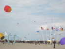
Ray Betell, indéracinable, fera toujours avec brio son numéro habituel : piloter simultanément 3 cerfs-volants...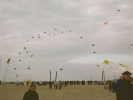
Tous les jours, mégateam pour 2-lignes d'ouverture et de fin d'après-midi...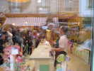
Au soir, restaurant, petite ballade dans les rues. Un confiseur, grâce à un crochet, transforme sous les yeux des badeaux du caramel fondu en berlingots et en sucettes...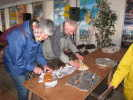
Ce soir, repas sous la tente, on va commander des pizzas (les jardiniers n'ont pas eu droit cette année aux tickets-restau du soir)...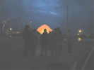
Après dîner, peu de vent, c'est le moment pour les montgolfières-papier ! Les spécialistes ont préparé leur lot, avec les outils soigneusement construits, comme les presses à mèches pour former celles-ci et exprimer l'excès de paraffine.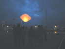
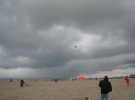
Au nord, un bon grain, bien noir dessous, mais qui nous évitera... Tout au long de la semaine, ce sera un coup à droite, un coup à gauche, mais dans l'ensemble, nous avons été chanceux !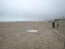
François (le Prés.) me prévient quand même, il tire de sa ligne des étincelles de 2 cm ! Nous descendons nos CVs en vitesse et allons nous mettre à l'abri !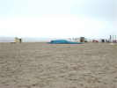
Ensuite, le vent tombe, la grenouille, malgré sa puissante musculature, s'est tristement affalée à bout de souffle !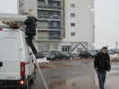
Dimanche soir, il commence à neiger, Bruno Tondellier range son bazar pour la nuit.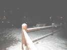
En sortant du restaurant, la neige a déjà recouvert les toits et les balustrades...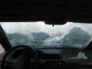
Au petit matin, j'ai l'impression d'être dans un igloo, mon pare-brise est couvert d'une épaisse couche de neige, qui fondouille, heureusement....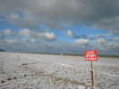
Les surfaces de vol sont toutes blanches, et il en restera toute la journée dans les creux et à l'ombre...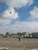
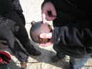
Aux JdVs, Didier a créé de très belles boules sonores en terre cuite émaillée, comprenant une anse d'accrochage, un trou pour le balai qui oriente la boule dans le vent, et la fente du sifflet... le tout formé en début de processus, bien sûr...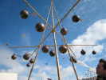
Ensuite, on passe des oxydes, on émaille en partie, et on finit par cuire. Si ça ne va pas, on casse et on jette... Sinon, il assemble le tout en un arbre musical, le vent n'a pas manqué pour les faire sonner !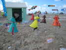
Les chats grelottants d'Emmanuel portent bien leur nom, avec les pieds dans la neige !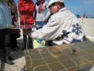
Ca se réchauffe, Uli Wahl a apporté 2 plaques vibrantes, sur lesquelles il marque les repères pour réaliser les arabesques désirées !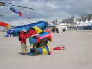
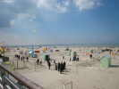
Du soleil ! Les JdVs se sont bien montés, les cerfs-volants sont encore un peu mous sur le matin...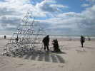
Vers l'hôpital, un superbe Bell est en voie d'achèvement ! Beaucoup de travail de fabrication et de montage sur le terrain...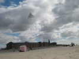
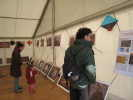
Sur la promenade, dans les tentes, expo photo de Nicolas Chorier qui a ramené des Indes de superbes aéro-photos, des éléphants, des temples, des rassemblements, de tout...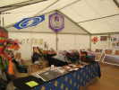
Ludo et Dom ont aussi leur stand orienté combattants, mais aussi petits cerfs-volants. Abdul est également présent, à Berck...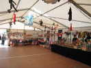
Dans une tente, un marchand de marionnettes en expose des centaines, l'embarras du choix !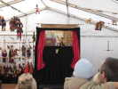
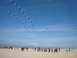
Le vent baisse et tout le monde se met en l'air. Je peux même faire voler ma grue encore très instable. Mais la régularité du vent me permettra de trouver enfin (3 mois que je cherche...) la bonne astuce pour la rendre stable !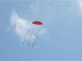
Un Faga très spécial, dont les coins arrières sont très étirés par une vergue. Comme quoi on peut toujours améliorer, ou au moins varier.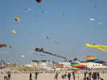
Vers le nord, quelques grandes pieuvres et raies. Sylvain montera aussi la sienne un peu plus tard...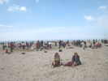
Comme le vent baisse, la température devient plus supportable, et bientôt, la plage est noire de baigneurs, enfin, de visiteurs...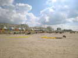
Evidemment, le vent faible est plutôt favorable à la prolifération des tapis de sol qu'à l'animation aérienne...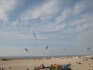
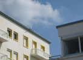
Petit vent, mon Goéland vole bien, mais j'ai oublié de monter les tendeurs de bout d'aile. Une turbulence et hop, sur le toit d'un immeuble. L'agence responsable ne veut pas donner les clés de peur qu'on n'abîme la toiture... Bon, on se débrouille sans eux...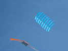
David Longbottom a créé (ou plutôt re-créé après un siècle) ce joli cerf-volant multi-surfaces qui vole très bien !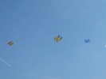
Karl, comme toujours a de splendides cellulaires très bien finis. Ils bougent un peu par vent fort, mais aujourd'hui, ça va...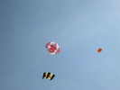
Un flocon, à armature externe (je trouve ça moins joli...) vole aussi de façon bien stable (ça, c'est pas toujours...), grâce à ses toiles bien tendues...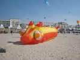
Au sol, une énorme chenille roule voluptueusement sur le sable, avec ses petites cornes rigolotes...